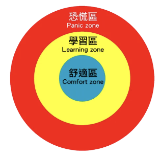
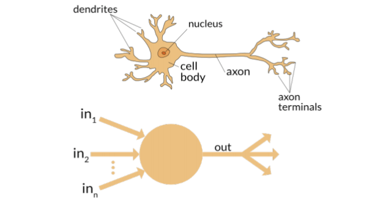
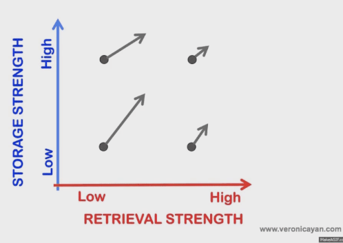
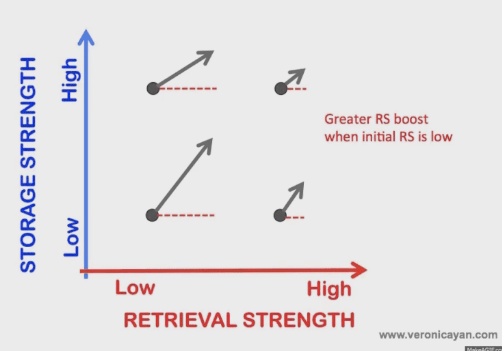
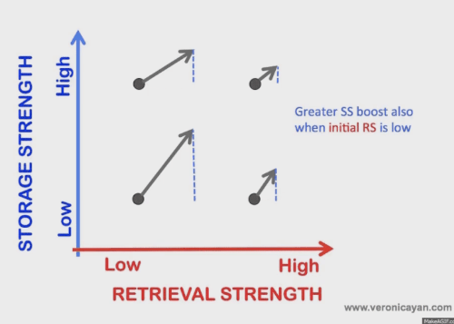
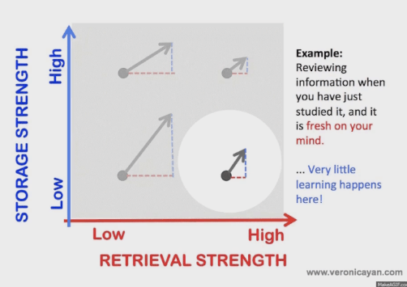
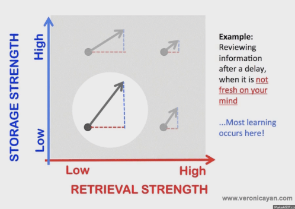
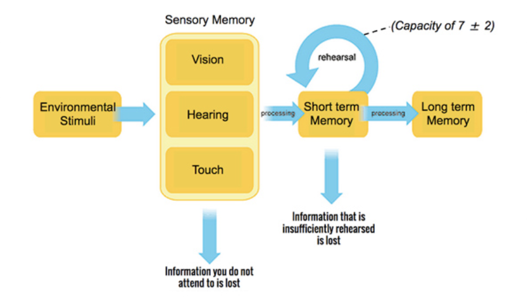
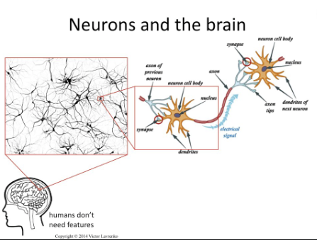
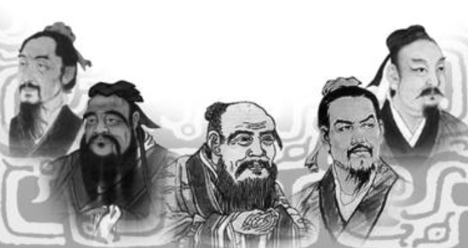

[啟發] 高手的學習方法 (一) | Master Learning Methods Part I
Status: Published
學習是我們常常提到的詞，有人認為它很簡單，有人覺得它很難，有人認為它寫讀書，也有人認為它無所不在，有人在大學畢業時就停止了，有人決心要堅持一輩子。對我而言，我認為學習是終身的課題，學習更要有系統性，對於不同的學階段和狀態要給予不同學習方針。
萬維鋼老師是我在<得到 app>，follow的第二個導師，也是因為這篇統整學習的方法，讓我決定訂閱精英日課第二季。
學習三個層次
心理學家把人對外界的感知分為三層區域，先要對自已了解，才對面外
- 「舒適區」是最裡面也是第一層，是我們熟悉的事物
- 「恐慌區」是最外面一層，它等於是我們完全陌生的事物
- 「學習區」是在舒適區和恐慌區之間，既有熟悉，又有新意

Img from satdarma.com
從認知科學角度出發
人腦學習新技能時，是發生在神經元這個層面的。
因為練習了一個動作，會觸發經常一起被使用神經元，最後就會長在一起，因此一個技能的形成可以解釋為
神經元整個網絡結構長好 了，就相當於一個技能長在了你的大腦之中

最初僅有cell body漸漸會有dedrites(樹突)和axon(軸突)，可以是輸入也可以向外延伸至別的神經元
刻意練習的一個關鍵，就是要脫離「舒適區」，只在壓力狀態下做事。因為成長來自打擊，技藝來自鬥爭。嘗試、失敗，再嘗試、再失敗經過不斷循環，直到掌握為止，我們要的就是這樣“有成效的失敗”，失敗為成功之母就是這個道理。
而且，我們不但應該在「學習區」練習，且應該在學習區研究、工作和娛樂。另外如果你要提昇自已，就需要把自已放學習區和恐慌區的邊界。
我們該如何學習？
關鍵的一點，就是你要敢於從「舒適區」往外走一 步，但是還不能走得太遠。面對這個世界你不 「能一味迎合，你要敢於任性地加入一點新東西，但是為了你自己的安全起見，也不要太新！加過量了。不但學習新技能應該這樣，平時工作也應該這樣。心理學家契克森米哈賴說，想要達到「心流狀態」，需要這個工作帶點難度和你的技能正好配得上，技能低工作難，你就會焦慮；技能高工作簡單，你就會無聊。
正確的「心流」是工作難度稍微比你的技能高一點點，你歷經一番忘我的掙扎把它完成。這樣你不但做事做得有意思、感到時間過得特別快，而且還能不斷提高水平。
學習千萬不能”只進不出”
你可能會說，我是在「學習區」，學了，背了，但是啥也沒記住，這不是白學了?
其實，人的記憶有兩個強度：
- 存儲強度 (storage strength)
- 提取強度 (retrieval strength)

提取記憶和記憶的存儲有正相關，提取越多更有機會存進長期記憶
img




存儲強度不會隨時間減弱(這點很重要)！我們每時每刻都在接收大量的信息，而其中的絕大部分都被大腦自動忽略了。這些被忽略的不算。那些剩下來的，是你主動希望記住的東西 ，比如說 一個人名，一個電話號碼或是一個英語單字。
一旦進入記憶，就永遠在那裡了。下次再見到它，它在你大腦裡的存儲強度會增強， 但是哪怕你再也不見它了，它的存儲強度也不會減弱。存儲強度只增不減。那麼為什麼我們會忘記東西呢？
那是提取強度出了問題。如果沒有復習跟練習，提取強度就隨著時間慢慢減弱
所以，學習不能一昧到倒東西進腦袋，一定要適時思考跟應用，增加存取頻率。
下篇會介紹古代偉人思想出發
幫助我們如何學習
[啟發] 高手的學習方法 (二) | Master Learning Methods Part II
長、短期工作記憶
現在心理學認為人有兩種「工作記憶」。
- 短期工作記憶：相當於電腦記憶體，是完成一項具體工作的時候大腦隨時使用的記憶。
- 長期工作記憶：相當於硬碟，是我們平時的知識存儲

右邊的記憶區分為：長期和短期。二個區塊訊息交流構成不同的工作模式
配合工作記憶，來解釋日常的人們的工作模式非常有趣
- 所謂學習：就是把進入到大腦的短期工作記憶的內容強化吸收，寫進長期工作記憶之中的過程
- 所謂創新：就是把長期工作記憶中的相關內容調出來，放在短期工作記憶裡跟新信息形成配合的過程
- 集中思維：就是在此時此刻的短期工作記憶裡強化這個新信息
- 發散思維：就是短期工作記憶和長期工作記憶之間的通道
人腦不像計算機的存儲器能瞬間記錄訊息，大腦是肉長的。
這就好像砌牆，你有了磚頭和水泥，總要再給點時間讓水泥風乾了，牆才能結實，這個道理就是呼應前篇提到的技能構成，它是由多個神經元網路所構成的，是需要點時間的阿
平台期，長肌肉時間
為什麼我們第一次學習新技能的時候總覺得很彆扭，過段時間，哪怕是睡一覺或者隔一天不練，再拿起來感覺反而好多了？！這一小段“不練”的間隔期對大腦非常重要。就好比練舉重，如果你每時每刻都舉重，你的肌肉沒有辦法生長，總要停一段時間長肉。

每一個神經元要變成完整的神經網路是要時間的，此時我們稱成平台期
我們學習各種技能，有時候會遇到一個短暫的平台期。比如當年學開車，一開始進步神速，過了一段時間，就感覺有幾天雖然一直在練，但是水平不但沒提高反而還下降了， 怎麼開都彆扭—這就是平台期。這個平台其實是大腦內部正在忙著建立新連接的時期，不是沒有進步，是因為後台正在重組！
據此我們知道，學習要慢慢來
學習知識並不是越快越好。複雜的技能需要時間間隔。
想記住，先學會忘記
知道了上篇提到的提取強度 (retrieval strength)的關系，東西存進腦袋是不會不見的。
即然如此，學習就不是天天都來，應該是用最少的時間學習，如此還能通過遺忘過濾掉一些不必要的信息。
以背單詞為例，這就要求我們
- 第一次復習是在一天之後
- 第二次就要拉長，比如說再等一周之後
- 然後是一個月之後
- 然後是幾個月甚至更長時間
有實驗證明，哪怕第一次復習是在兩個月之後，你感覺什麼都不記得了，其實還是能找到一點印象，這種學法還是有效的！
所以要想記住，最好先忘了。從這個角度講，慢慢學才是好辦法。這週學了一點就放下，下週接著學得先提取一下前面的記憶，這樣多次提取，記憶就加深了很多。交叉著在同一時期內學習幾門課程，比學完一門再學另一門的效果好得多。
莊子 | 無為的狀態
忘記的功夫。修煉這個“忘記”的功夫，咱們得學學莊子。那麼身一位有學問的現代人，應該怎麼達到莊子無為的境界呢?

孔子、老子、孟子和莊子，給我們提供了四種路徑方法，每個人應該根據自己的性格喜好選擇不同的方法，而且在人生的不同階段，也可以使用不同的方法。
- 孔子的思想應用：
在學習任何技能的初期，我們應該用孔子的辦法，勤學苦練，搞沉浸式的教育體驗，爭取習慣成自然。 - 老子的思想應用：
具體做事的時候，尤其是要做那些能夠影響別人的大事，我們應該參考老子的思想，不輕易干擾複雜系統。 - 孟子的想思應用：
培養藝術品位，提昇道德水準，我們可以用孟子的辦法，找到身上的閃光點作為種子，慢慢發展壯大。 - 莊子的想思應用：
如果面對一項壓力巨大而又特別重要的工作，我們就應該學習莊子，忘記自我，讓熱認知引導我們發揮水平。
這四派武功，你只有實踐了，才知道那到底是什麼境界
正所謂運用之妙，存乎一心。
結論：
讀完二篇的介紹，首先要清楚自已的學習區間，也就是「舒適區」、「學習區」與「恐慌區」。再來就是要懂得復習跟思考，這個手段就是增強我們的提取記憶，目的則是把短期記憶推展到長期記憶成生技能的一部份。
古人的思想這些手段的確是互相矛盾的，但世界本來就充滿矛盾且復雜。無為，本來就是一個悖論：你越想得到無為，你就越得不到無為。不過真正的高手是能善用策略面對不同的學習。